I nostri numeri sull'Italia
Questa sezione del sito si propone di fornire strumenti di semplice lettura e comprensione per restituire in modo quanto più possibile immediato una vasta mole di informazioni rilevanti su ciò che succede e su come si vive oggi in Italia.
Cliccando su ciascuno dei bottoni qui sotto verranno visualizzati alcuni grafici, accompagnati da brevi testi di commento, che abbiamo selezionato con il duplice obiettivo di gettare una luce sulle tendenze in atto in Italia e di fotografare i problemi e le sfide più urgenti da affrontare nell’immediato futuro.
I grafici indagano la condizione del nostro paese rispetto agli anni passati o al confronto con gli altri Stati europei: organizzati rispettando la partizione dei diversi capitoli della Controfinanziaria di Sbilanciamoci!, presentano e riassumono molti dati economici, sociali e ambientali, dal sistema fiscale all’occupazione, dal mercato del lavoro al reddito, dal welfare all’istruzione e la formazione, fino alle spese militari.
In altri termini, i grafici che seguono sono idealmente pensati come tappe di un percorso che inquadra e attraversa le diverse priorità che dovrebbero stare al centro dell’agenda politica di un paese attento alla giustizia economica e sociale, all’equità fiscale, alla sostenibilità ambientale. Cominciando proprio da quello che Sbilanciamoci! da sempre propone: il buon utilizzo della spesa pubblica “per i diritti, la pace, l’ambiente”.
Sempre più indebitati…
Le ricette di austerità adottate in Europa per rimettere in ordine innanzitutto i conti pubblici dei paesi della cosiddetta “periferia” (Grecia, Spagna, Italia, Portogallo) non danno i frutti sperati. L’andamento del rapporto debito/Pil, uno degli indicatori guida su cui si fondano queste misure, anziché ridursi e rientrare nei limiti imposti dal Trattato di Maastricht (60%), fa registrare un aumento proprio quando e dove avrebbe dovuto ridursi. Ed è così che in Italia, dal 2007 al 2016, il rapporto debito/Pil passa dal 99,8 al 132,6%. Senz’altro una buona ricetta… per un fallimento annunciato.
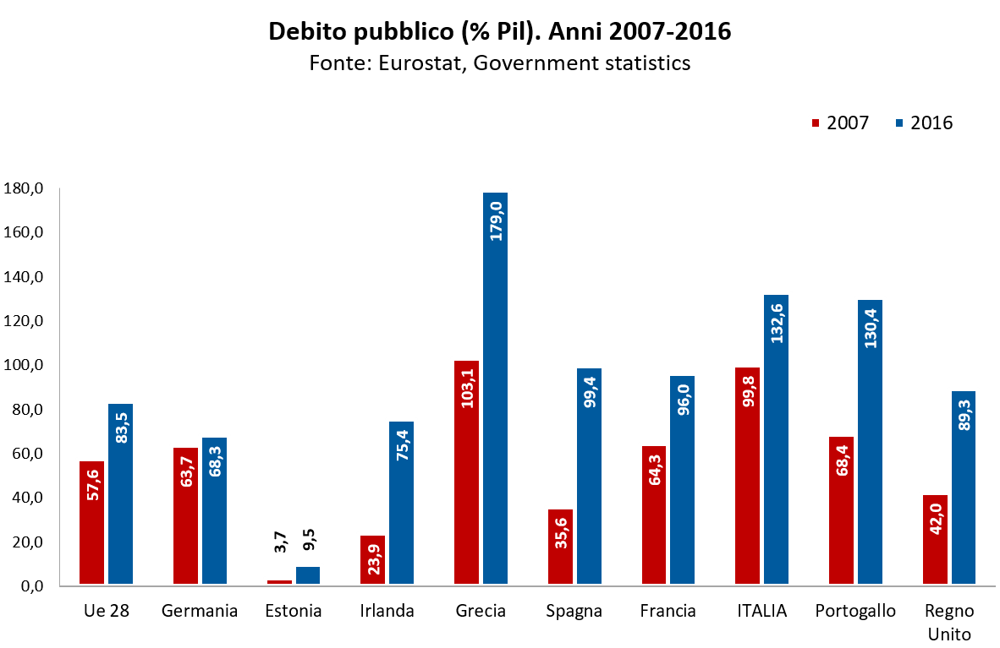…senza essere spendaccioni
L’Italia ha la cattiva fama di essere un paese “spendaccione” e dalle finanze pubbliche disastrate. Ma basta dare uno sguardo al dato sul rapporto deficit/Pil per capire come nel 2016 l’Italia abbia fatto registrare un livello di deficit (l’indebitamento netto che comprende anche la spesa per interessi) pari a -2,4%: un livello inferiore rispetto a quello di molti altri paesi europei più o meno “periferici” come, rispettivamente, Spagna e Francia.
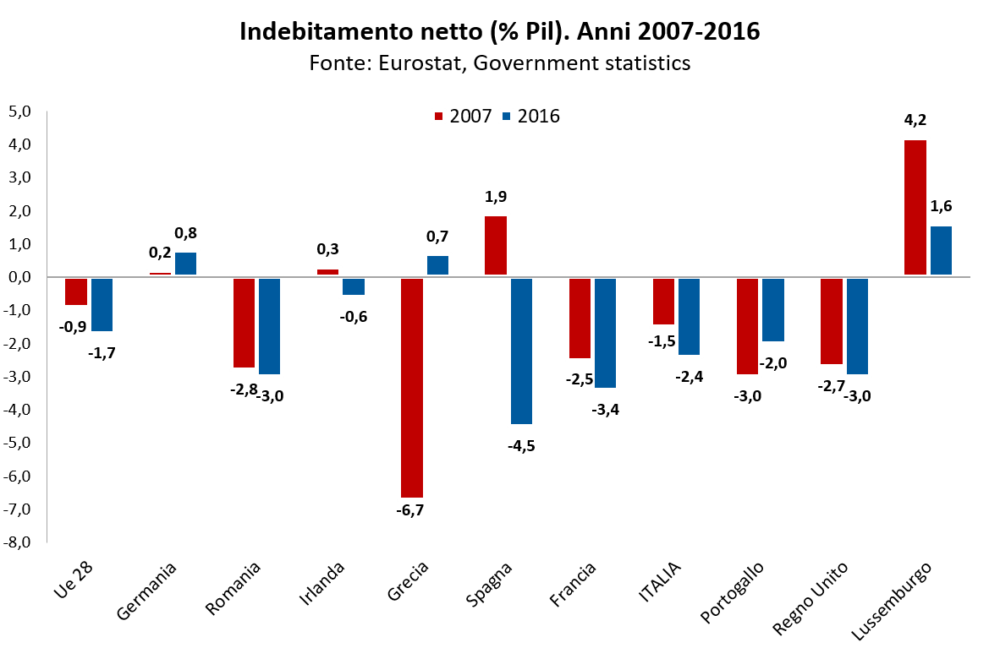Maledetti interessi
Se si guarda al dato del saldo primario – cioè la differenza tra entrate e uscite di un paese, esclusa la spesa per interessi – l’Italia risulta addirittura uno dei paesi più virtuosi del continente, con un avanzo primario pari all’1,5%, molto superiore alla media europea (0,4%). Altri grandi paesi dell’Unione (Francia, Spagna, Regno Unito) fanno registrare invece avanzi primari molto peggiori. Questo significa che sul deficit italiano grava in larga misura la cospicua spesa per interessi che il nostro paese si trova a dover sostenere ogni anno.
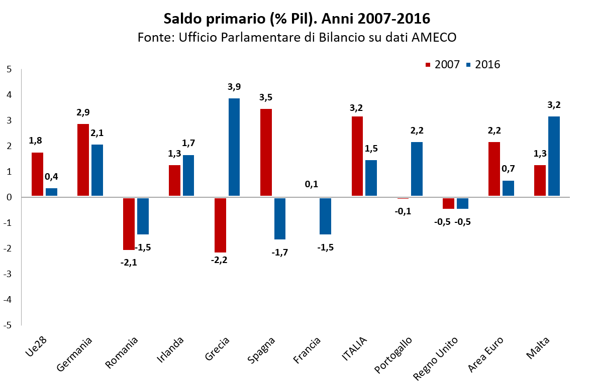Il made in Italy è fuori moda
Molte delle politiche economiche e monetarie perseguite in Europa hanno lo scopo di rendere le economie europee più “competitive”, in base al principio secondo cui dalla crisi si esce incrementando le esportazioni, cioè diventando tutti un po’ più tedeschi. Nonostante questi “buoni” propositi, la quota di mercato delle esportazioni italiane nel mondo si riduce nettamente rispetto ai livelli pre-crisi: assistiamo infatti alla riduzione delle esportazioni sia dei beni (dal 3,6 nel 2007 al 2,9% nel 2016) sia dei servizi (dal 3,4 nel 2007 al 2,1% nel 2016).
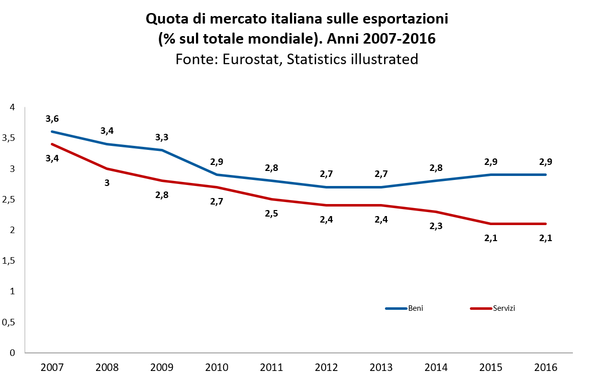Sempre in attesa di crescere
L’andamento del Pil del nostro paese rivela l’incapacità di uscire dalla crisi del 2007-2008 e di attestarsi su un vero sentiero di crescita. Al di là della instabilità che caratterizza questo andamento, sono due i dati che risaltano agli occhi: da un lato, la perdita di valore del Pil italiano rispetto al 2007, dall’altro il ruolo giocato in questo risultato negativo dalla componente della domanda interna. Insomma, l’assenza di reali politiche di sostegno e stimolo alla domanda aggregata pesa come un macigno sulla crisi del paese e sulle sue prospettive di ripresa.
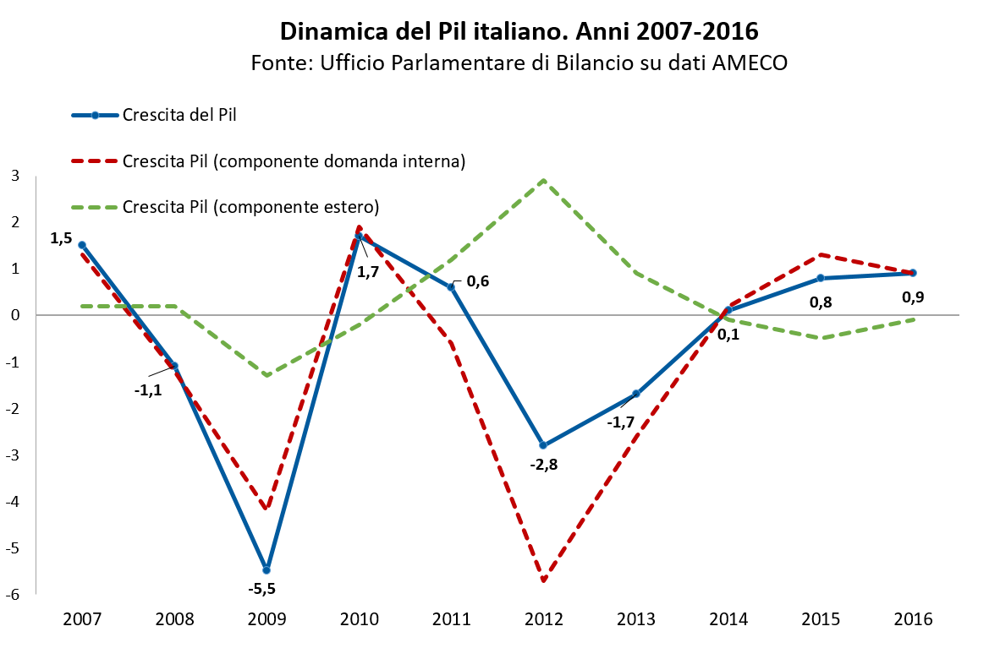Più sei ricco, meno paghi
Di fronte a una crisi ormai decennale, chi dovrebbe sostenerne di più il peso? La risposta non è scontata: in barba a qualsiasi principio di giustizia economica e progressività fiscale – come quello sancito dall’articolo 53 della Costituzione (“Tutti sono tenuti a concorrere alle spese pubbliche in ragione della loro capacità contributiva”) –, pressoché ovunque in Europa l’aliquota marginale più alta per la tassazione dei redditi delle persone fisiche ha subito negli ultimi dieci anni una netta diminuzione: dal 47 al 39,3% la media europea, dal 51 al 48,9% in Italia. A quanto pare, non solo la crisi non viene pagata da chi ha di più, ma chi ha di più è ulteriormente avvantaggiato.
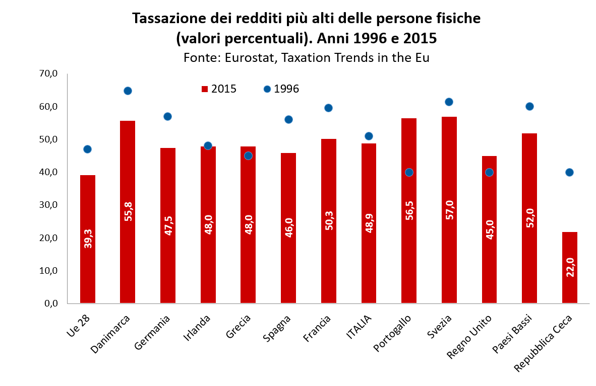La gara al ribasso delle tasse alle imprese
Insieme alle persone ricche, sempre meno tassate, anche gli imprenditori europei – grazie al mercato comune e alla concorrenza fiscale – riescono a spuntare trattamenti fiscali sempre più favorevoli. La forte diminuzione della tassazione media dei redditi d’impresa fra il 1996 e il 2015 – ad esempio, in Italia dal 53,2 si passa al 31,4%, in Germania dal 56,7 al 30,2% – mostra come in tutta Europa si sia avviata una gara al ribasso sulla tassazione delle imprese. Non solo dunque maggiore flessibilità sul mercato del lavoro (leggasi meno diritti per i lavoratori), ma anche meno tasse per le imprese con l’illusione di scongiurare il rischio delle delocalizzazioni e attrarre occupazione.
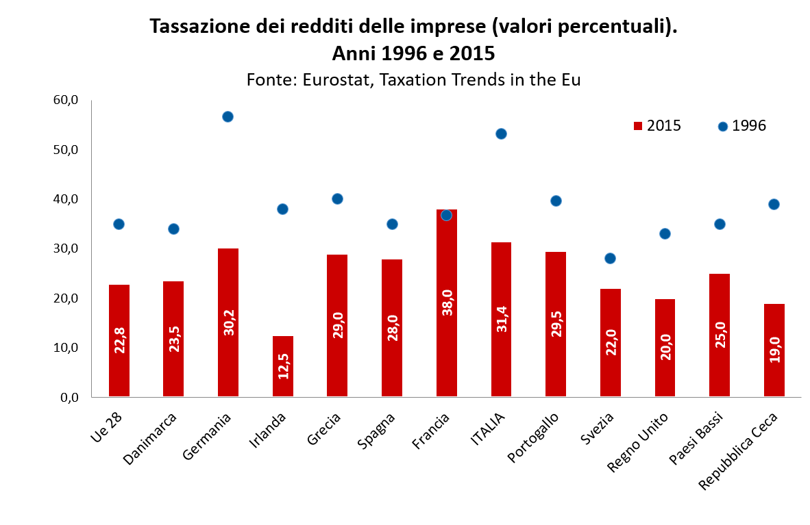La grande fetta invisibile dell’economia italiana
207,5 miliardi di euro, il 12,6% del Pil: a tanto ammonta nel 2015 la stima dell’economia non osservata in Italia derivante dalla somma tra il volume dell’economia sommersa (a sua volta costituita in grandissima parte da sotto-dichiarazione e lavoro irregolare) e il volume delle attività illegali. Il peggioramento del dato rispetto ai livelli del 2012 dimostra l’inadeguatezza delle politiche messe in atto finora per contrastare evasione fiscale, lavoro nero e criminalità organizzata. E per recuperare, al contempo, ingentissime e preziose risorse per le casse statali.

Non è un paese per lavoratori
I numeri sulla disoccupazione in Italia mostrano un paese piegato dalla crisi e dalle politiche di austerità, con ferite ancora più profonde che attraversano le divisioni per aree geografiche e per genere. Il dato complessivo della disoccupazione nel 2016 è dell’11,7%: gli attuali 3 milioni di disoccupati sono più del doppio di quelli registrati nel 2007. La disoccupazione femminile, pari al 7,8% nel 2007 si impenna al 12,8% (+5%) nel 2016, mentre nel Mezzogiorno si passa dall’11,4 al 19,6% (+8,2%) nello stesso arco di tempo.
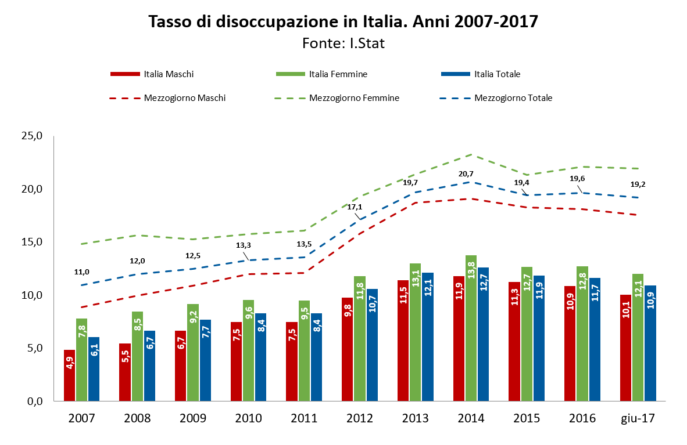L’infruttuosa ricerca di lavoro
Oltre la metà dei disoccupati italiani – il 57,3 % – sono disoccupati di lunga durata, sono cioè alla ricerca di un’occupazione da più di un anno: un dato che mette in mostra lo scarsissimo dinamismo del mercato del lavoro del nostro paese (oltre che il fallimento delle recenti politiche sull’occupazione). Se nel 2016 il risultato è lievemente migliorato (+0,8%) rispetto all’anno precedente, si resta ancora lontani dai valori del 2007, quando la percentuale di disoccupati di lunga durata a livello nazionale era pari al 46,9.
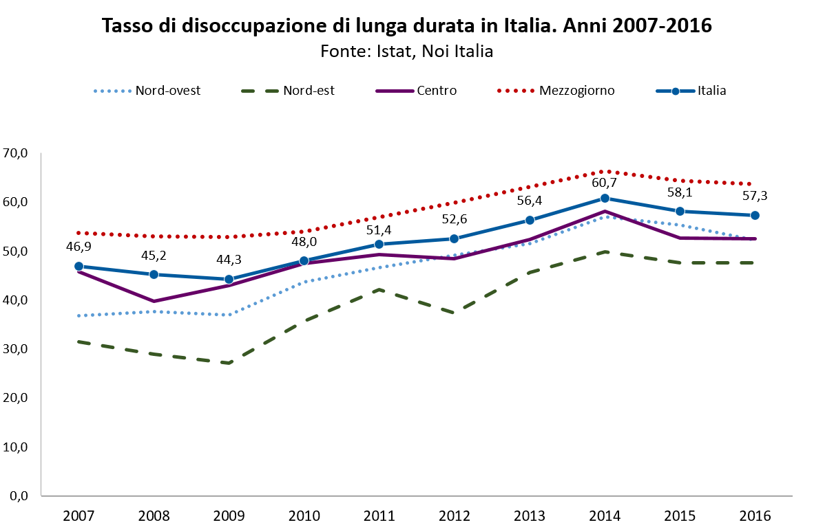Giovani a spasso
Le riforme del mercato del lavoro degli ultimi anni non sono riuscite a migliorare la drammatica situazione dei giovani europei tra i 15 e i 24 anni: nel 2016 in Italia la disoccupazione giovanile (37,8%) rimane a livelli praticamente doppi rispetto a prima della crisi. Inoltre, il nostro paese si colloca quasi 20 punti percentuali al di sopra della media europea (18,7%). Il dato evidenzia anche la profonda spaccatura all’interno dell’Unione Europea: dopo gli anni di “cura” a base di austerity il tasso di disoccupazione giovanile della Grecia nel 2016 si trova ancora al 47,3%, mentre quello tedesco è al 7,1%.
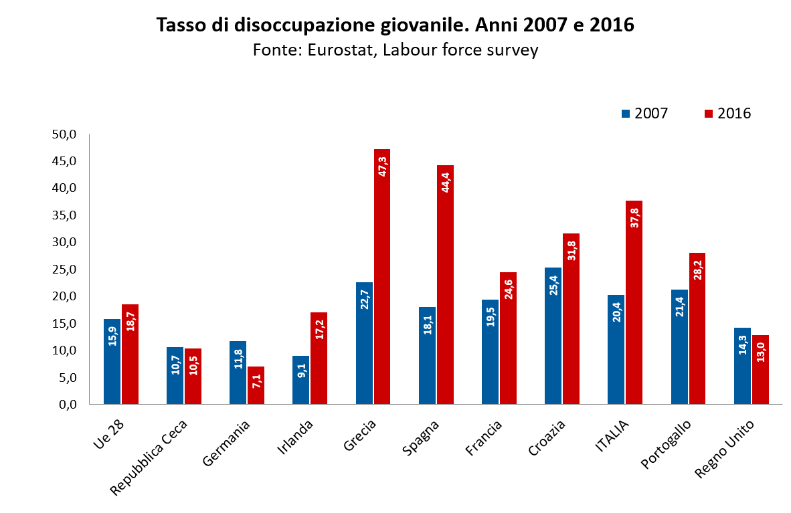Lavorare meno, lavorare tutti…
Le ore medie lavorate in un anno continuano ad attestarsi su livelli più elevati nei paesi europei che hanno maggiormente risentito degli effetti negativi della crisi. Questi paesi “periferici” continuano infatti a far registrare numeri decisamente più alti rispetto a quelli di altri Stati del “centro”. In Italia, ad esempio, si lavorano in media 1.730 ore, contro le 1.472 della Francia e le 1.418 della Germania (dati 2016). Alla luce di questo dato – soprattutto se lo si accompagna con quello sulla disoccupazione – l’opzione del “lavorare meno, lavorare tutti” sembra quanto mai auspicabile e attuale…
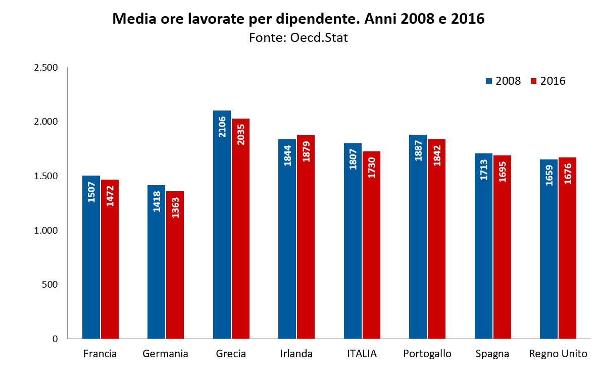…e guadagnare di più
La crisi economica che segna il paese da dieci anni ha un impatto negativo sul mercato del lavoro non solo in termini di aumento della disoccupazione, ma anche di diminuzione dei salari. In Italia avviene il contrario di ciò che accade in molti altri paesi europei (a partire da Francia, Germania, Irlanda e Spagna) in cui si assiste a una crescita – molto consistente in Germania e Francia – dei salari medi annui. Tutto ciò chiama in causa la scelleratezza delle politiche comunitarie e nazionali sull’occupazione: misure tutte centrate sulla moderazione salariale, inseguendo l’abbaglio di promuovere così la competitività e compensare il gap di produttività.
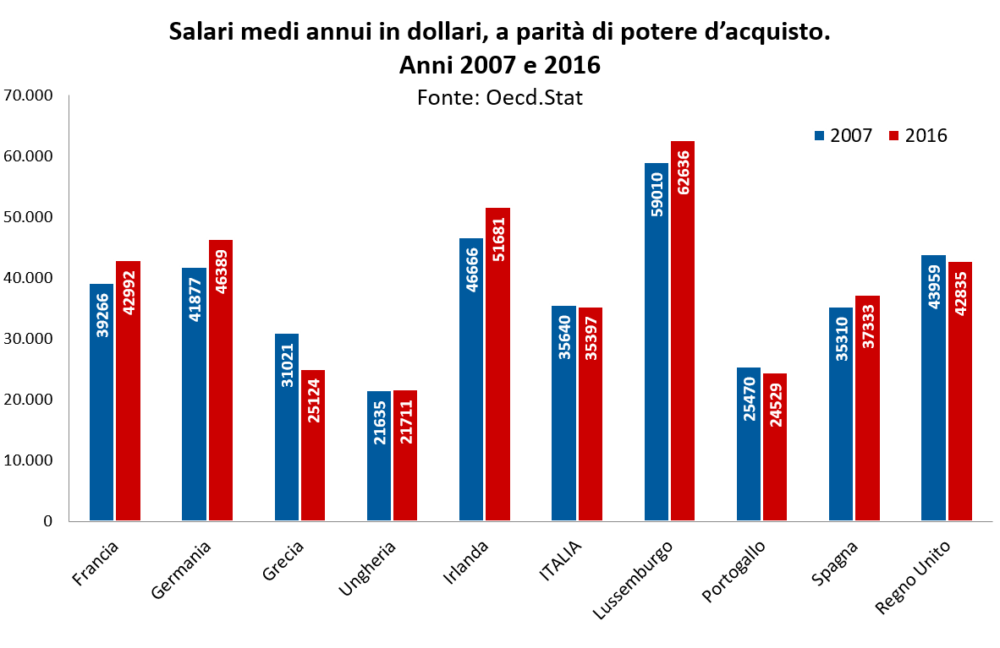Per diventare precari non è mai troppo… PrestO
Al di là della grande retorica con cui è stato presentato dallo scorso governo Renzi, il Jobs Act non sembra migliorare le condizioni del mercato del lavoro italiano. Il grafico mette in luce l’importanza delle trasformazioni contrattuali: il forte aumento dei contratti a tempo indeterminato a dicembre 2015 e la caduta da gennaio 2016 in poi testimoniano il ruolo chiave degli incentivi nello stimolare questa dinamica. Una volta operata la riduzione del 50% dell’importo degli sgravi ottenibili dalle imprese a fronte di assunzioni e trasformazioni con il nuovo contratto a tutele crescenti (gennaio 2016), i contratti permanenti risultano inferiori rispetto sia al 2015 che al 2014. Questo trend si conferma anche fino ad agosto 2017 (ultimo dato disponibile).
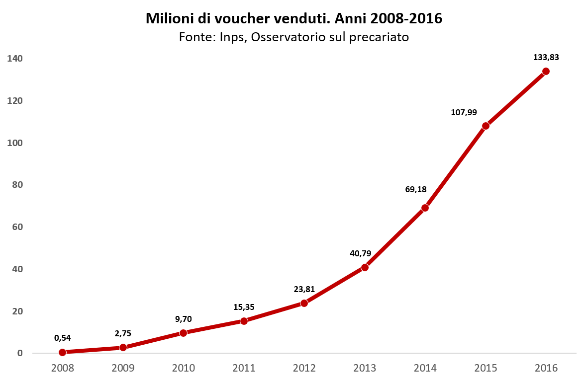Il grande inganno del Jobs Act
Chi ha un’occupazione, lavora molto. Le ore medie lavorate in Italia in un anno sono infatti quasi 1.600 per impiegato: un riscontro in linea con quello degli altri paesi ”Piigs”, ma ben più alto rispetto a quello francese (1.399) e tedesco (1.309 ore). Alla luce di questo dato – e di quello relativo alla disoccupazione – l’opzione “lavorare meno, lavorare tutti” sembra davvero auspicabile e attuale...
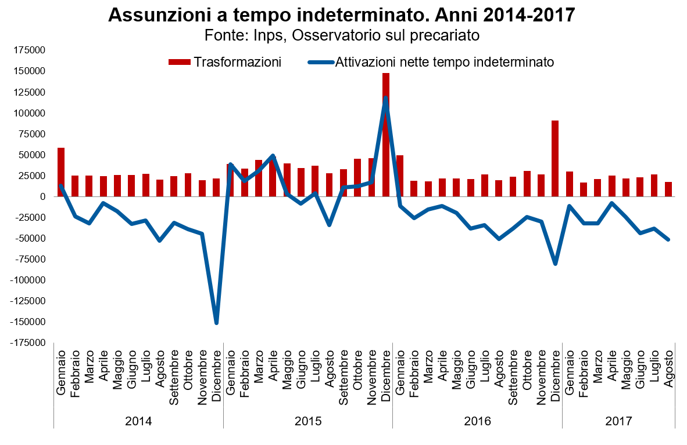Italiani, popolo di santi, ristoratori e commercianti
Nel corso degli ultimi tre anni, e per ciascuno di questi anni, la quota di assunzioni a tempo indeterminato più alta si registra di gran lunga nel settore del commercio e della ristorazione, tipicamente un comparto a basso contenuto tecnologico e con modesti investimenti in ricerca e sviluppo. Le assunzioni nelle attività professionali, scientifiche e tecniche, nelle amministrazioni e nei servizi di supporto rimangono invece pressoché stabili, mentre nel settore pubblico il dato diminuisce dal 16,3% del 2016 al 15% del primo semestre 2017. Non sono buone notizie: per rilanciare l’economia italiana occorre innanzitutto investire e favorire l’occupazione proprio nei comparti produttivi più innovativi e a più alto contenuto tecnologico e valore aggiunto.
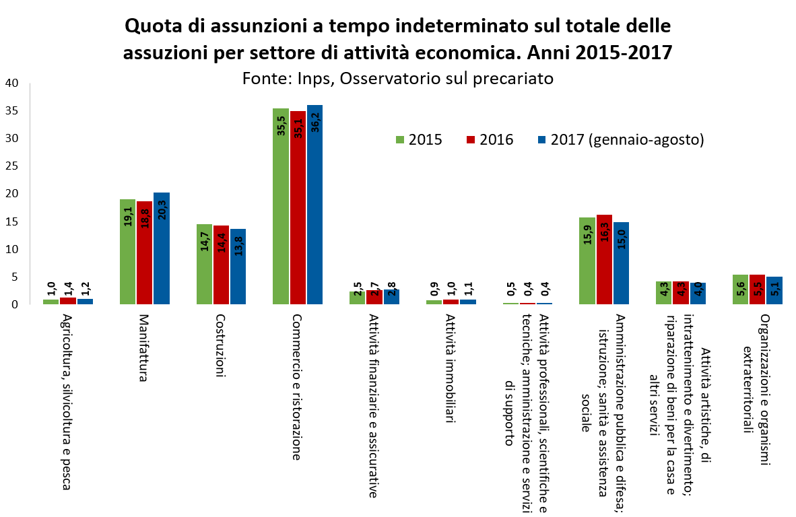Investimenti al palo
L’Italia ha subìto negli ultimi dieci anni una perdita di competitività e capacità produttiva causata in larga parte da un forte calo degli investimenti: questa contrazione, a sua volta, ha frenato e frena in modo decisivo le possibilità di ripresa. In questo quadro, gli investimenti in capitale fisso sono costantemente diminuiti, e in particolare la quota destinata a impianti, macchinari e armamenti (-16% dal 2007 al 2016). Più in generale, la dinamica degli investimenti mostra una grave contrazione nel periodo 2008-2013. Nel triennio 2014-2016, fase in cui (in termini tecnici) si è registrata l’uscita dell’Italia dalla recessione, gli investimenti non hanno tuttavia recuperato i livelli pre-crisi.
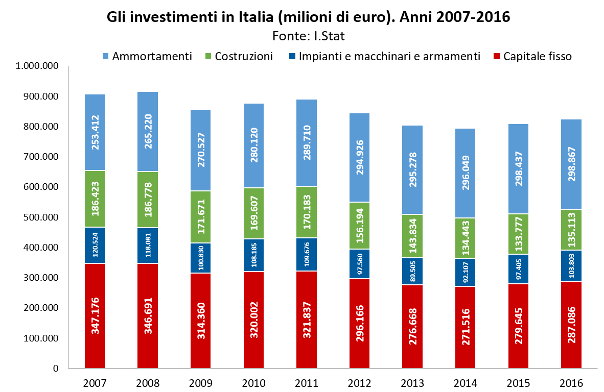Chi troppo, chi niente
I dati sulla distribuzione del reddito (da lavoro e da capitale) e della ricchezza (immobiliare e finanziaria) rilevati nel 2014 mostrano un paese attraversato da profonde diseguaglianze. Guardando i redditi, il quinto più povero delle famiglie italiane detiene una quota di reddito che supera appena il 6%, mentre al quinto più ricco va più del 40% dell’intera torta. La diseguaglianza è ancora più marcata se si osservano i dati sui patrimoni immobiliari e finanziari. Il 30% della ricchezza complessiva è qui nelle mani del 5% delle famiglie più ricche, con un patrimonio medio di 1 milione e 300mila euro, mentre al 30% delle famiglie più povere spetta solo l’1% della ricchezza totale. Non a caso, l’indice di Gini – che va da 0 (completa eguaglianza) a 100 (massima diseguaglianza) – calcolato sui redditi (32,9) è quasi la metà di quello calcolato sulla ricchezza (61,3).
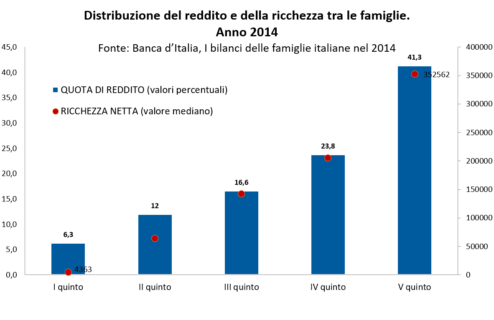Il mantra dell’insostenibilità della spesa sociale…
Il mantra secondo cui in Italia la spesa sociale è eccessiva – e di conseguenza non possiamo più permetterci di sostenere il costo del nostro sistema pubblico di welfare – andrebbe smentito con decisione, denunciandolo per ciò che è davvero: un potente e comodo alibi costruito e veicolato ad arte dai detrattori delle conquiste dello stato sociale e dai fautori delle privatizzazioni. Basta guardare a composizione e ammontare della spesa pubblica pro-capite nel 2015 per verificare che nel nostro paese si spende meno in protezione sociale che in paesi come Francia e Germania (per non parlare di Svezia e Regno Unito). Ovviamente, lo stesso vale per la presunta insostenibilità della spesa pensionistica: il dato sull’Italia (4.574 euro pro-capite) è sì superiore a quello tedesco (4.058), ma è inferiore a quello francese (4.798) e inglese (4.674). E non si deve poi dimenticare che la spesa per malattia in Italia (2.264 euro) è inferiore a quella di Francia, Germania e Regno Unito.
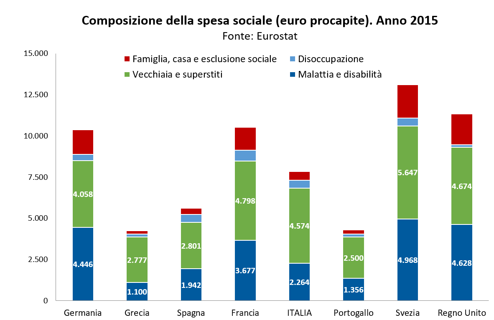...e quello dell’insostenibilità della spesa sanitaria
Proprio come per il mantra sull’insostenibilità del nostro welfare, è necessario smentire anche quello sull’insostenibilità della nostra spesa sanitaria pubblica: dati Ocse alla mano infatti, questa spesa in Italia (pari a poco più di 2.500 dollari per abitante nel 2016) non appare così alta se confrontata con quella di altri paesi europei come Francia (3.626 dollari), Germania (4.694), Irlanda (3.878), Regno Unito (3.320). Anche in questo caso, quindi, anni e anni di insistenza da parte di politici, opinionisti ed “esperti” sull’eccesso di spesa in sanità hanno spianato la strada ai continui tagli nel finanziamento dei servizi pubblici sanitari e alla loro privatizzazione.
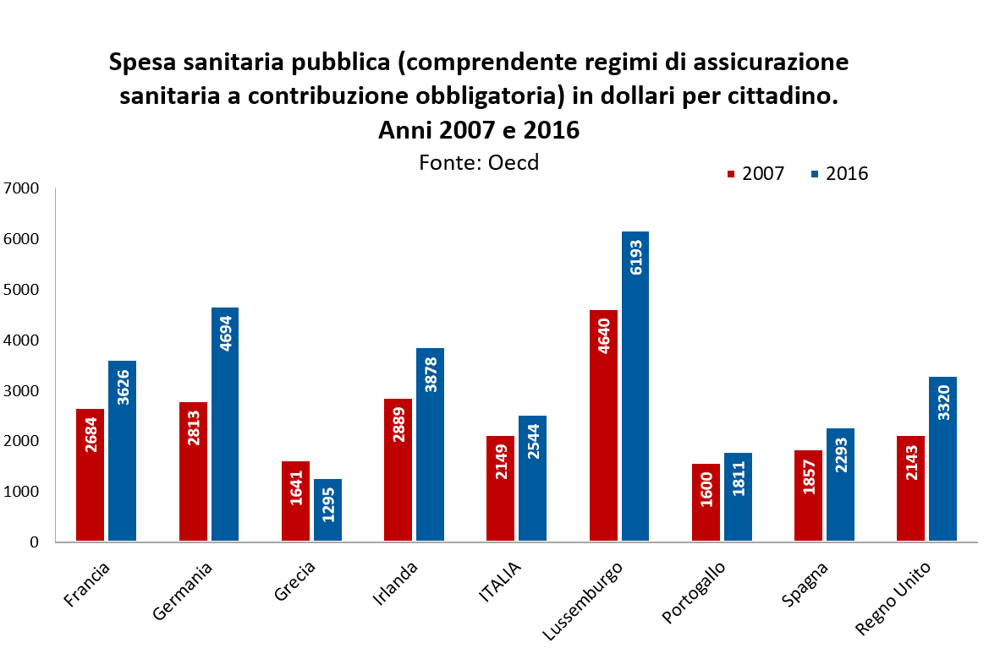L’aumento esponenziale della povertà
L’Istat considera in condizioni di povertà assoluta le persone con una spesa mensile pari o inferiore a quella minima necessaria per acquisire un paniere di beni e servizi essenziali a uno standard di vita minimamente accettabile. Sono invece in condizioni di povertà relativa le persone con una spesa per consumi pari o inferiore alla linea di povertà, che per una famiglia di due componenti è pari alla spesa pro-capite (spesa che si ottiene dividendo la spesa totale per consumi delle famiglie per il numero totale dei componenti): nel 2016 questa spesa è risultata di valore pari a 1.061,5 euro mensili. La povertà assoluta individuale, al 3,1% nel 2007, è più che raddoppiata nel 2016 raggiungendo il 7,9% (un fenomeno che tocca oltre un milione e mezzo di famiglie). La povertà relativa aumenta invece nello stesso arco di tempo dal 10,5 al 14% (con circa 2,7 milioni di famiglie coinvolte). La crisi, insomma, ha prodotto effetti devastanti in termini di aumento della povertà in Italia. Di fronte alla gravità di questa situazione, il Rei – così come è pensato e (sotto)finanziato – non basta: occorrono misure ben più ambiziose e strutturali di sostegno al reddito.
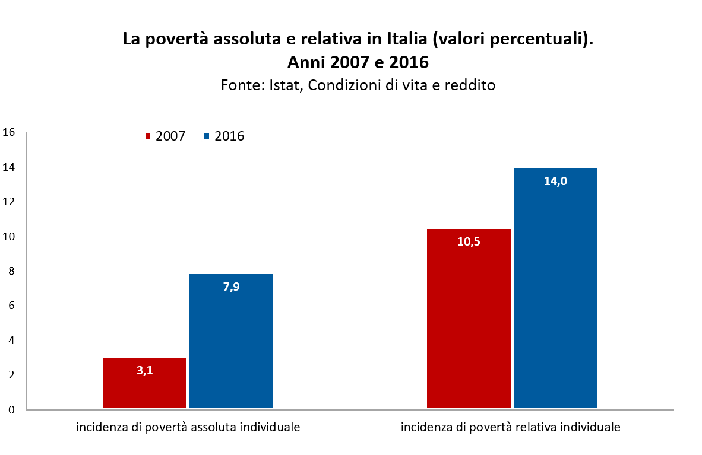Pagano le donne...
Sul mercato del lavoro sono le donne a subire più pesantemente gli effetti della crisi economica. È quanto emerge dal dato sull’aumento della differenza retributiva tra uomini e donne (nei settori industria, costruzioni e servizi), che passa dal 4,9% al 5,5% tra il 2008 e 2015. Anche se l’Italia rimane uno dei paesi europei in cui la disparità tra quanto guadagnano gli uomini e quanto le donne è tra le più contenute, è comunque evidente che il peso della crisi ricada più sulle seconde che sui primi. Ad eccezione del Portogallo (dove il differenziale è aumentato dal 9,2% del 2008 al 17,8% del 2016), il differenziale retributivo nella Ue a 28 tende a scendere (dal 17,3 al 16,4% la media europea), mentre in Italia tra il 2008 e il 2014 è cresciuto di 0,6 punti percentuali. Occorre dunque rimarcare che qualsiasi disparità di trattamento salariale tra uomini e donne è, ovunque, ingiustificata e ingiustificabile.
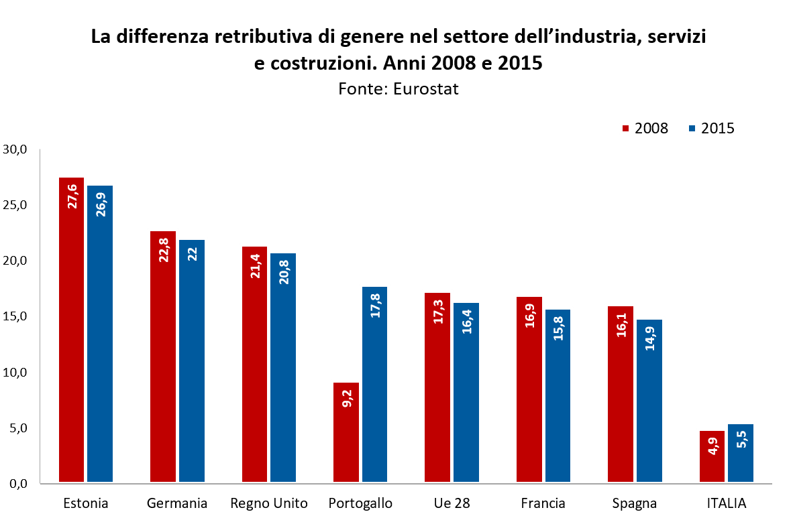Gente senza casa, case senza gente
Se prima della crisi gli sfratti emessi in Italia erano circa 40mila ogni anno, nel 2014 sono stati più di 77mila, nel 2015 più di 64mila, nel 2016 oltre 61mila. Il numero delle richieste di esecuzione forzata, nel frattempo, è aumentato del 50%: un incremento dovuto sostanzialmente all’esplosione della morosità, che prima della crisi rappresentava il 65% del totale degli sfratti e che oggi tocca quota 90%. Inoltre, sono circa 700mila le famiglie che, pur certificate dai comuni come utilmente collocate nelle graduatorie per ottenere una casa popolare, rimangono senza risposta. E sono 1 milione e 700mila quelle in condizione di disagio abitativo, che pagano cioè un affitto superiore al 30% del loro reddito complessivo. Un ultimo dato: la stima di alloggi vuoti e inutilizzati nel nostro paese è di circa 4 milioni. A fronte di numeri come questi, non c’è alcun intervento strategico per affrontare il nodo di fondo della sofferenza abitativa. Infatti il Fondo sociale affitti per le famiglie in difficoltà è azzerato da due anni e non è rifinanziato, mentre il Fondo sociale per la morosità incolpevole è un vuoto simulacro: prendendo a base il numero di sentenze di sfratto per l’anno 2016, siamo a una media di contributo di 20 euro.
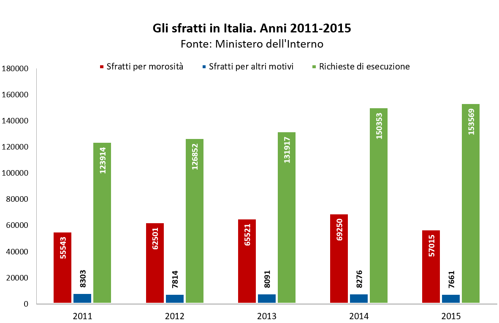Scelte miopi sull’istruzione e la formazione
Nel 2015 (ultimo dato disponibile) l’Italia ha destinato soltanto il 4% del proprio Pil all’istruzione e alla formazione, con una diminuzione di 0,1% rispetto al 2014 e di ben mezzo punto percentuale rispetto al 2007. Dopo più di un decennio di tagli a questi fondamentali capitoli di spesa, il risultato è scontato: ci troviamo molto al di sotto della media europea (4,9%), e spendiamo come la Bulgaria e meno di Grecia (4,3%), Regno Unito (5,1), Portogallo (6), Francia (5,5), Germania (4,2). Ma mentre in molti di questi paesi, proprio negli anni della crisi, si è scelto di destinare maggiori risorse alla formazione e all’istruzione, in Italia si è proceduto in direzione opposta. A dimostrazione del disinteresse nei confronti delle generazioni più giovani, e della grave miopia che una simile decisione comporta in termini di disinvestimento sul nostro futuro.
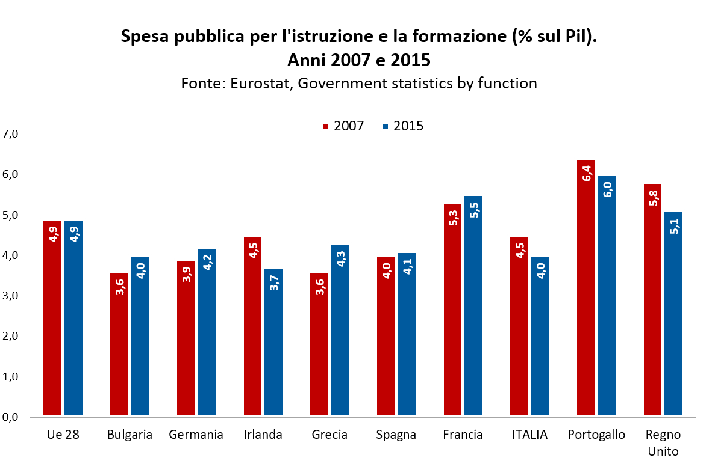Migliorarsi è d’obbligo
Quasi il 40% degli italiani di età compresa tra i 25 e i 64 anni ha un titolo di studio non superiore al diploma di scuola secondaria di primo grado, ovvero ha in tasca soltanto la licenza di scuola media. Questo risultato non certo brillante colloca l’Italia molto al di sopra della media europea (23,1%). E se da un lato è vero che il dato migliora sensibilmente dal 2007 (quando la percentuale era pari al 47,8), dall’altro lato è altrettanto vero che occorre mettere in campo un piano di investimento strutturale volto al rapido miglioramento dei livelli di istruzione nel nostro paese.

Pochi laureati, e sempre meno universitari
In Italia, la percentuale di persone di età compresa tra i 30 e i 34 anni in possesso di una laurea (26,2) risulta tra le più basse d’Europa, molto al di sotto della media europea (39,1). Anche in questo caso, così come per la percentuale di popolazione con la licenza media, si evidenzia un miglioramento rispetto ai livelli del 2007. Tuttavia, è necessario prendere in considerazione – e registrare con preoccupazione – il dato relativo al passaggio dalle scuole superiori all’università: se nel 2008 il 63,6% dei diplomati si iscriveva all’università, nel 2015 siamo calati drammaticamente al 50,3%. Infatti gli iscritti all’università nel 2016/2017 sono 1.683.307, 62mila in meno rispetto a otto anni fa. E ancora più accentuato è il calo del personale docente strutturato: da 62.772 unità nel 2008 a 48.881 nel 2016. Di fronte a questa traiettoria, frenare l’involuzione del nostro sistema universitario dovrebbe essere una priorità per tutti.
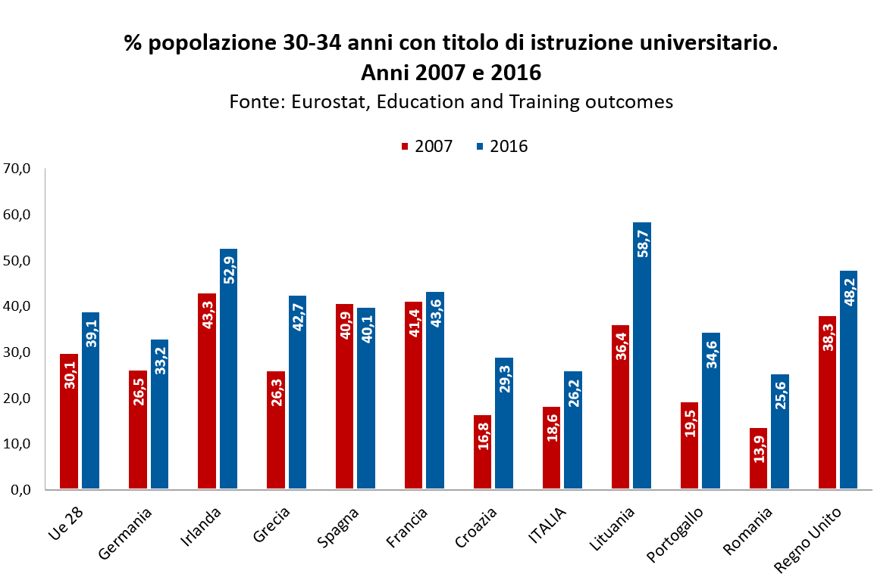Senza ricerca, la strada è sbagliata
Nell’attuale mercato globale, specialmente in Europa, una seria politica di investimenti nella ricerca specifica e applicata e in quella di base è fondamentale. Perseguire obiettivi di crescita e competitività senza investire in ricerca e sviluppo sembra essere invece la strategia – assolutamente perdente e incoerente – dell’Italia. La spesa totale del nostro paese in ricerca e sviluppo è pari infatti all’1,33% del Pil, lo 0,7% in meno rispetto alla media europea. Per avere un altro termine di confronto, e capire qual è la distanza che ci separa dall’intraprendere un sentiero virtuoso, Svezia e Germania destinano rispettivamente a questo capitolo di spesa il 3,26 e il 2,87%.
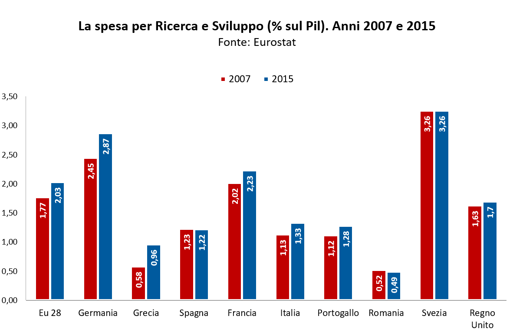Per un giovane su quattro, né studio, né lavoro, né formazione
Per più di un quarto dei giovani italiani non sembra inappropriato l’utilizzo dell’espressione “generazione no future”. Nel 2016, in Italia si registra infatti uno sconcertante primato negativo: è il paese in tutta Europa – seguito nella classifica da Bulgaria, Grecia, Romania e Croazia – con il maggior tasso di Neet (acronimo di “Not in Education, Employment, or Training”), persone di età compresa tra i 15 e i 29 anni che non studiano, non lavorano e non sono inserite in alcun percorso di formazione. Il confronto con Paesi Bassi e Germania è eloquente: 24,3% di Neet nel nostro paese contro, rispettivamente, 6,3 e 8,9% (mentre la media europea è pari al 14,2%).
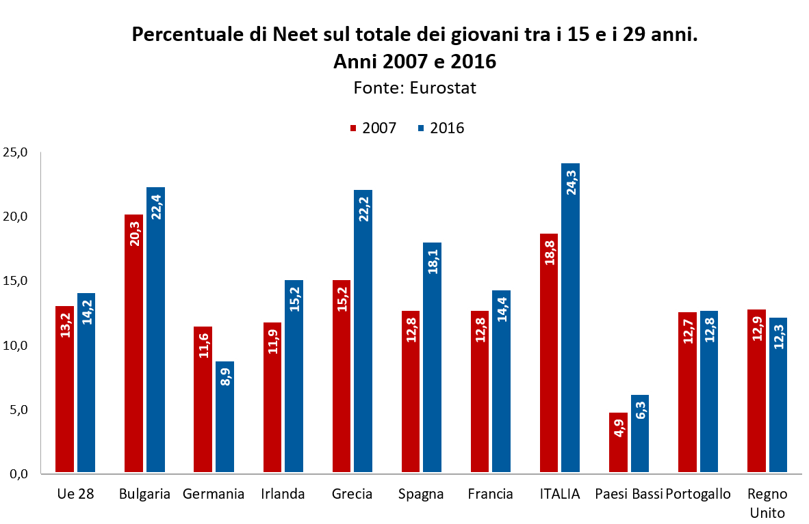Tutti in macchina
In Italia ci sono oggi più di 615 autovetture ogni mille abitanti (nel 2004 erano 587), a fronte di 1,6 autobus circolanti (esattamente come nel 2004). Dovrebbe bastare soltanto questo dato a esprimere la necessità e l’urgenza di un radicale cambiamento di prospettiva – accompagnato da adeguati investimenti nelle politiche – in direzione della promozione della mobilità sostenibile e del trasporto pubblico: abbattere il congestionamento e l’inquinamento scoraggiando l’utilizzo del mezzo privato (soprattutto nelle aree urbane) deve essere un obiettivo ineludibile per tutelare la nostra salute e promuovere la qualità della vita nei nostri territori.
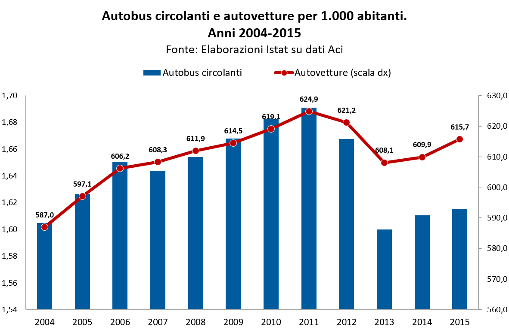Cresce la differenziata (ma non basta)
Dal 2004 al 2015 si assiste in Italia alla diminuzione dei conferimenti in discarica dei rifiuti e al corrispondente aumento della raccolta differenziata. Un risultato di certo positivo, che però non basta. Secondo il Testo unico ambientale, infatti, nel nostro paese la raccolta differenziata dei rifiuti avrebbe dovuto raggiungere almeno il 65% entro il 31 dicembre 2012. A cinque anni di distanza l’obiettivo è ancora lontano: dei 26,5 milioni di tonnellate di rifiuti urbani prodotti ogni anno in Italia, solo il 47,5% è intercettato dalla raccolta differenziata.
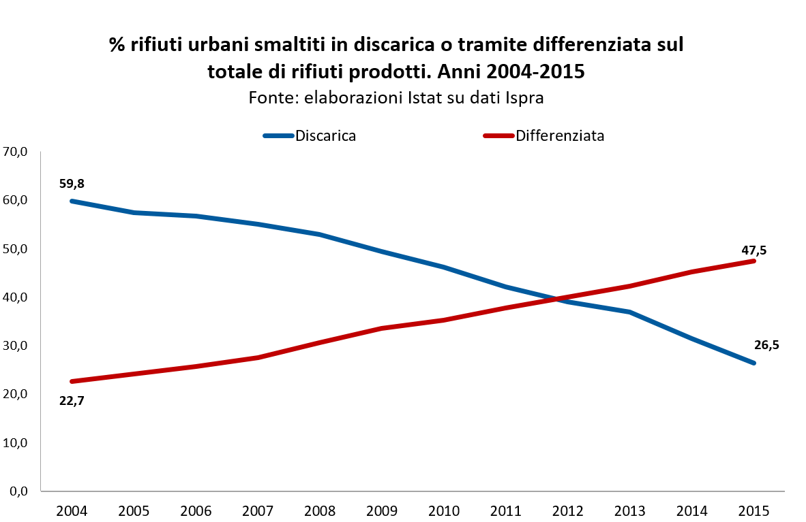Più risorse per i trasporti pubblici!
Tra gli Obiettivi di sviluppo sostenibile che 193 paesi, nel settembre 2015, si sono impegnati a raggiungere entro il 2030 vi è quello di garantire l’accesso a un sistema di trasporti sicuro, accessibile e sostenibile, in particolar modo potenziando i trasporti pubblici. In Italia, sul totale delle persone che si sono spostate per motivi di lavoro e di studio con mezzi di trasporto sia privati sia pubblici, soltanto il 20,2% ha usato quelli pubblici. Incentivare questo utilizzo è quindi assolutamente necessario. Sbilanciamoci! propone, come primo passo concreto in questa direzione, di dirottare le risorse a sostegno dell’autotrasporto nel 2018 (pari a 296 milioni di euro) all’implementazione della Strategia nazionale per lo sviluppo sostenibile, a cominciare proprio dal Piano strategico nazionale per la mobilità sostenibile (che nel 2018 non prevede appositi stanziamenti).
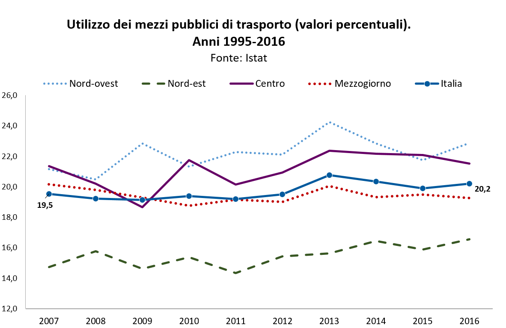Rinnovabili in aumento
Una buona notizia viene dal fronte delle rinnovabili: l’Italia fa registrare infatti nel periodo 2007-2015 una crescita sostenuta dei consumi di energia elettrica coperti da fonti rinnovabili. In questo arco di tempo il valore nazionale della copertura è infatti più che raddoppiato (dal 13,3 al 33,2%). In particolare, merita di essere sottolineato il risultato che viene dal Mezzogiorno, dove si assiste a un exploit con una repentina ascesa dall’8,3 al 38,9%.
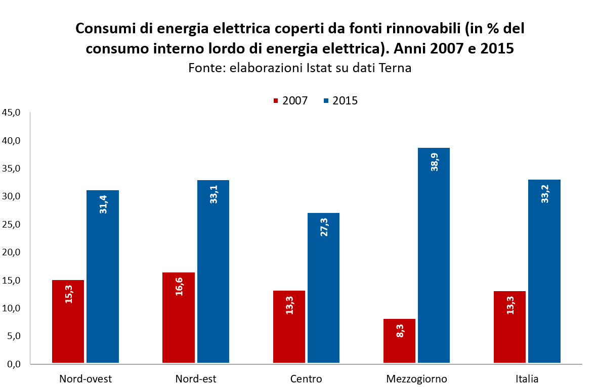Un consumo davvero dissennato
I dati dell’Ispra, l’Istituto superiore per la protezione e la ricerca ambientale, parlano chiaro: dagli anni ’50 a oggi il consumo di suolo in Italia è più che raddoppiato, passando dal 2,7 al 7%. Solo negli ultimi dieci anni (2008-2015) si registra un aumento dello 0,6%, pari a 1.700 chilometri quadrati di suolo “bruciati” in nuovi impianti, infrastrutture e costruzioni. È un dato su cui riflettere. Lo riconosce lo stesso Ispra, secondo cui (cfr. la presentazione del Rapporto “Consumo di suolo, dinamiche territoriali e servizi ecosistemici. Edizione 2017”) “non vi sono ancora strumenti efficaci per il governo del consumo di suolo, e ciò rappresenta un grave vulnus in vista della auspicata ripresa economica, che non dovrà assolutamente accompagnarsi ad una ripresa della artificializzazione del suolo che i fragili territori italiani non possono più permettersi. (…). Un consistente contenimento del consumo di suolo è la premessa per garantire una ripresa sostenibile dei nostri territori attraverso la promozione del capitale naturale e del paesaggio, l’edilizia di qualità, la riqualificazione e rigenerazione urbana, oltre al riuso delle aree contaminate o dismesse.” Più chiaro (e condivisibile) di così…
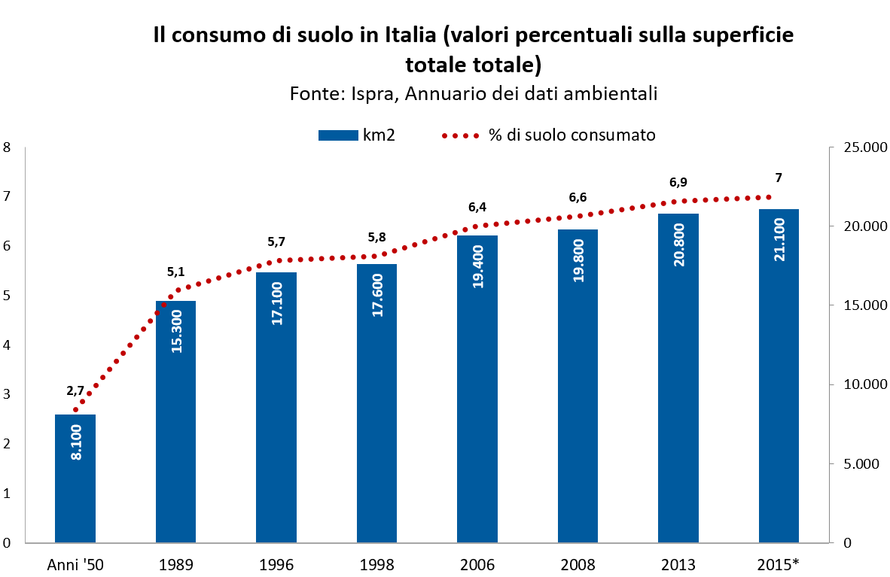Armati fino ai denti
In Italia, se c’è un capitolo di spesa pubblica che proprio non conosce crisi, senza dubbio è quello relativo all’acquisto di armamenti. Nell’arco di dieci anni, si registra infatti per questa voce un aumento di oltre 2,5 miliardi di euro, da poco più di 3 miliardi nel 2006 agli oltre 5,5 di oggi. E nel 2017 si assiste a un aumento rispetto al 2016 sia dello stanziamento a bilancio del Ministero della Difesa per i programmi di acquisizione e ammodernamento di armamenti, sia dei contributi che il Ministero dello Sviluppo economico destina a questo stesso scopo. In base ai calcoli dell’Osservatorio Mil€x, sommando le due voci, la spesa in armamenti nel 2017 supera i 5,6 miliardi di euro – oltre 15 milioni di euro al giorno, con un aumento di quasi il 10% sul 2016 – arrivando a rappresentare quasi un quarto della spesa militare complessiva.
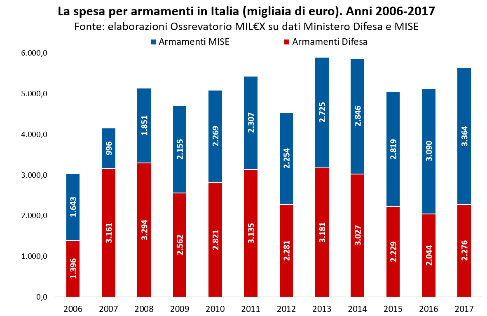